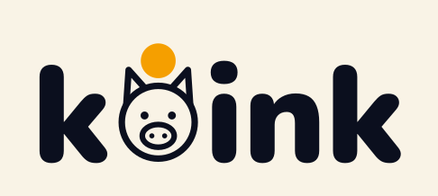

Koink brand sheet
Every asset in its light and its dark version, generated from src/brand/art.js by npm run brand.
Icon
 Icon, light
Icon, light Icon, dark
Icon, darkWordmark

Wordmark, light Wordmark, dark
Wordmark, darkLaunch animations
Tap one to play it again.

1. coin-oink, light (1250 ms)
1. coin-oink, dark (1250 ms)
2. sketch, light (1000 ms)
2. sketch, dark (1000 ms)3. roll-in, light (1050 ms)3. roll-in, dark (1050 ms)
4. pop-toss, light (980 ms)4. pop-toss, dark (980 ms)5. hop-wink, light (820 ms)5. hop-wink, dark (820 ms)